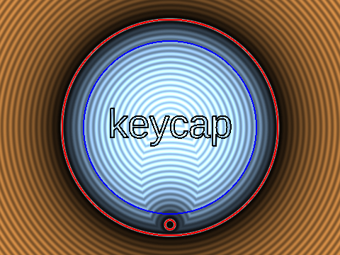

Editing and previewing
Drafted with AI, not yet reviewed
The script buffer
keycap-mode starts one keycap-server process per buffer.
After each change, once typing pauses for keycap-load-delay seconds, it evaluates the script; the preview, Flymake and the header line follow.
- Key: C-c C-c (keycap-preview)
- Show the preview of the script beside it, creating it if needed.
- Key: C-c C-v (keycap-preview-cycle-view)
- Switch the preview to its next view; see Views.
- Key: C-c C-e (keycap-export-stl)
- Mesh the drawn shapes into an STL file. With a prefix argument, ask for the resolution too.
- Key: C-c C-l (keycap-export-2d)
- Trace the drawn shapes’ outlines into an SVG or a DXF file for laser cutting; see Exporting for laser cutting. With a prefix argument, ask for the kerf too.
- Key: C-c C-r (keycap-export-resin)
- Slice the drawn shapes into the layers of a resin print; see Printing in resin. With a prefix argument, ask for the printer too.
- Key: C-c C-k (keycap-export-cancel)
- Cancel the export that runs; the file keeps what it had.
- Key: C-c C-d (keycap-describe)
- Show the documentation of a function or shape, by default the one at point.
The reference it opens lists everything a script can call, grouped by where it comes from.
The script’s own functions and those it imports, such as
skadis::board, are documented by their///comments. - Key: C-x C-e (keycap-eval-last-expression)
- Evaluate the expression before point in the scope of the whole script and show its value in the echo area; with an active region, evaluate the region.
A tree shows as its value at the origin and the bounds fitted to it, such as
tree: -5 at the origin; x -5.2 to 5.2, .... - Key: C-c C-n (keycap-increase-number)
- Add 1 to the digit before point in the number at point, or to its last digit when point is not after one of its digits; with a numeric prefix, add that many.
In
12.5with point after the5, it steps by 0.1; after the2, by 1; after the1, by 10. The echo area shows the number’s name and the step, such aspitch 12 → 22 (step 10). Right after,nandpnudge it again, until another key. - Key: C-c C-p (keycap-decrease-number)
- The same, downwards; a number can cross zero.
- Key: S-<wheel-up> (keycap-mouse-nudge-number)
- Over a digit, add 1 to that digit;
S-<wheel-down>subtracts. Elsewhere, the wheel scrolls as it would. - Key: S-<down-mouse-1> (keycap-mouse-scrub-number)
- From a digit, drag right to add to that digit, a step per column the mouse moves, or left to subtract; the preview follows, and the whole drag undoes as one change.
The Keycap menu in the menu bar has these commands with their keys (F10 opens it when the menu bar is hidden).
With context-menu-mode, right-clicking a function or shape offers its description.
Flymake marks errors, warnings and notes in the script; see When a script fails.
completion-at-point offers every function, shape and variable, and the script’s own; inside a shape’s map, as in circle(#{, it offers that shape’s fields with their types and defaults.
ElDoc shows the signature of the call at point, or the doc of the field at point.
Both know the functions the script defines and imports, as of its last evaluation.
M-x keycap-guide opens this manual.
C-h S (info-lookup-symbol) finds a function in its index.
M-x keycap-version shows the versions of keycap, its server and Emacs, and copies them, for a bug report.
The preview
The preview shows the shapes the script draws, each in its colour, rendered by keycap-server into a frame under $XDG_RUNTIME_DIR/keycap/.
Its header line shows the view, the bounds in use and where they come from, the backend, the render time, the slice in 2D views, and, while the mouse is over the image, the point under it and the field’s value there.
Lines the script print-s show below the image, up to keycap-preview-output-lines of them.
The header line’s words are buttons: the view and the camera, or the slice’s axis and offset, offer their choices in a menu, the wheel over the offset moves the slice, a tilted slice’s angles level it, and the bounds and the backend switch when clicked; an error goes to its line in the script, and an export cancels.
Right-clicking the preview opens the same menu as the menu bar’s Preview, which, over the model, starts with the way to its shape’s draw.
A click selects the preview, for its keys; dragging, the wheel and the header’s buttons leave the keyboard where it was, so the script can be typed in while the mouse turns the model.
Views
- shaded
- the model in 3D, each shape in its colour, lit as in a studio: a key light from the upper left, a fill light from the right and light from above, less of it in crevices. The lights turn with the camera; the CPU and the GPU light alike.
- heightmap
- the model in 3D, its depth as grey.
- sdf
- a 2D slice through the model, coloured by the field’s value: orange outside, blue inside, with lines at regular distances, and red where the field is NaN. The view for 2D drawings and for checking that a field is a distance (see Exact distances and bounds).
- mono
- a 2D slice, white inside and black outside.
A model that is unbounded along Z, as every 2D drawing is, opens in the sdf view.
From a 3D view, the 2D views slice through the middle of the bounds, across the axis sliced last (Z at first), or through 0 along an unbounded axis; the header line shows where, such as sdf z = 4.
A slice can tilt, to cut a slanted wall square across and measure it: about the image’s right and up, through the middle of the bounds.
The image’s scale stays; the offset then runs along the tilted normal, and the header line shows the angles, such as sdf z ⊥ (12°, -30°) at 4.
The point under the mouse is read in the model’s own coordinates.
? names the most used keys of the view shown in the echo area, the slice’s in 2D; the preview does so once by itself the first time it shows a 3D view and a 2D one.
h lists every key.
Preview keys
The keys come in families: the digits point the camera, or the slice in 2D views; brackets and braces move and tilt the slice; s, z, d and m pick a view; Shift with the mouse moves the slice, Control tilts it.
- Key: <left> (keycap-preview-orbit-left)
- Turn the camera around the model; in 2D views, the arrows pan.
<right>,<up>and<down>turn it the other ways. - Key: M-<left> (keycap-preview-pan-left)
- Move the camera;
M-<right>,M-<up>andM-<down>likewise. - Key: + (keycap-preview-zoom-in)
- Zoom in; also
=and the mouse wheel. - Key: - (keycap-preview-zoom-out)
- Zoom out.
- Key: <down-mouse-1> (keycap-preview-mouse-orbit)
- Drag to turn the camera; while it drags, frames have at most half the resolution (
keycap-preview-drag-resolution), the last one in full. - Key: <down-mouse-2> (keycap-preview-mouse-pan)
- Drag to move the camera.
- Key: p (keycap-preview-projection)
- Switch between orthographic and perspective.
- Key: 1 (keycap-preview-front)
- Look from the front, as the numpad’s
1does in Blender; in 2D views, slice level across Y, the axis the front camera looks along, through the middle of the bounds. - Key: 3 (keycap-preview-right)
- Look from the right; in 2D views, slice level across X.
- Key: 7 (keycap-preview-top)
- Look from the top; in 2D views, slice level across Z.
- Key: 0 (keycap-preview-isometric)
- Look from the front right, above; in 2D views, slice through the middle of the bounds facing that way, tilted from Z.
- Key: r (keycap-preview-reset-camera)
- Look from the front right, above, unmoved and unzoomed; in 2D views, level the slice where it is.
- Key: v (keycap-preview-cycle-view)
- Switch to the next view.
- Key: s (keycap-preview-shaded)
- Switch to shaded.
- Key: z (keycap-preview-heightmap)
- Switch to heightmap, the depth along Z.
- Key: d (keycap-preview-sdf)
- Switch to sdf, the distance field on a slice.
- Key: m (keycap-preview-mono)
- Switch to mono, the inside and outside on a slice.
- Key: [ (keycap-preview-slice-backward)
- Move the slice of the 2D views back along its axis, by about a twentieth of the bounds; with a numeric prefix, move it to that offset.
- Key: ] (keycap-preview-slice-forward)
- Move the slice forward.
- Key: { (keycap-preview-tilt-backward)
- Tilt the slice 5° about the image’s right, its top away; with a numeric prefix, tilt it to that angle.
- Key: } (keycap-preview-tilt-forward)
- Tilt the slice the other way, its top toward you.
- Key: M-{ (keycap-preview-tilt-left)
- Tilt the slice 5° about the image’s up, its right edge toward you;
M-}the other way. - Key: S-<wheel-up> (keycap-preview-mouse-slice-step)
- Step the slice forward, as
];S-<wheel-down>steps it back, andM-<wheel-up>andM-<wheel-down>ten steps. - Key: S-<down-mouse-1> (keycap-preview-mouse-slice)
- Drag up or down to move the slice, the window’s height covering the bounds along its axis; frames have the resolution of
<down-mouse-1>, the header line shows where the slice is. - Key: C-<down-mouse-1> (keycap-preview-mouse-tilt)
- Drag to tilt the slice, as if holding it: down brings its top toward you, right takes its right edge away.
- Key: <double-mouse-1> (keycap-preview-mouse-goto-shape)
- Go to the
drawof the shape under the mouse, in the script or the file it imports; in 2D views, of the shape the mouse is in, or the nearest one. - Key: <down-mouse-3>
- The preview’s menu: views, cameras or slices, bounds, backend and exports.
- Key: b (keycap-preview-toggle-bounds)
- Switch between the script’s bounds and the bounds fitted to the model.
- Key: G (keycap-preview-toggle-backend)
- Render on the other of the GPU and the CPU than the frame was rendered on, or, once switched, where it is sooner again.
- Key: e (keycap-preview-export-stl)
- Export, within the bounds the preview shows.
- Key: l (keycap-preview-export-2d)
- Export the outlines on the slice the 2D views show, tilted or not, for laser cutting, within the bounds the preview shows.
- Key: C-g (keycap-preview-keyboard-quit)
- Cancel the export that runs; without one, quit as usual.
- Key: ? (keycap-preview-keys)
- Name the most used keys of the view shown.
- Key: g
- Render again.
Bounds
The preview shows a region of space: the script’s, set with bounds, or one fitted to the drawn shapes.
Without a bounds call, the fitted region stands in.
keycap-server fits it by interval arithmetic: it shrinks a large box from each side while the slab it cuts off is provably outside every shape.
A side where that never becomes provable is unbounded: a 2D drawing along Z, an endless repeat, a field that interval arithmetic sees through badly.
When the fitted bounds are in use and interval arithmetic gives the shapes NaN far out, the header line says so; see Preview problems.
Unbounded axes are centred on 0 and as wide as the widest bounded one, or 20 units when every axis is unbounded; set bounds when the fitted region is wrong.
Exporting
C-c C-e meshes the union of all drawn shapes, within the bounds, into a binary STL.
The mesh cells are at most 1/resolution units across: the script’s resolution, else keycap-export-resolution (10 cells per mm by default), or with a prefix argument, the one you type.
Every draw is exported, reference geometry included; see Reference geometry.
Meshing uses every core, or keycap-server-threads of them; at 10 cells per mm, a part the size of a hand, such as knob.keycap, takes a few seconds, and a vase a few minutes.
The mesher makes triangles of the cells’ size everywhere, flat faces as dense as curves, so the export then simplifies the mesh: triangles merge wherever the surface stays within keycap-export-tolerance of the one meshed, a tenth of a cell unless set.
Sharp edges and thin walls stay, since flattening them would stray further than that; a flat face becomes a few large triangles, and a curve keeps the triangles it needs to bend within the tolerance.
At 2 cells per mm, vase-koch.keycap meshes into 2 million triangles and exports as 73,000 within 0.04 mm, a file nearly thirty times smaller; a tolerance of 0 keeps every triangle.
The resolution decides which details the mesh catches, and the tolerance how closely it follows them: a finer resolution for small features, then a tolerance around the printer’s own accuracy.
The export runs beside everything else: the script can be edited and the preview turned while it does, and it writes the script as it was when the export started.
The preview’s header line shows its progress, such as Exporting part.stl: sampling, 12 s: sampling the shapes is most of the time, then triangulating, simplifying and writing.
The echo area tells the result, such as Exported knob.stl: 42564 triangles (of 960906, within 0.0053) in 5.1 s.
An export that would take more memory than is free stops with an error rather than crowd out the rest of the machine; a lower resolution, or tighter bounds, make it fit.
C-c C-k in the script, or C-g in the preview, cancels it; the file keeps what it had, since a mesh only replaces it once it is complete.
One export runs at a time.
Exporting for laser cutting
C-c C-l traces the outlines of the drawn shapes on a plane into a drawing for a laser cutter.
The file’s extension chooses an SVG or a DXF.
A 2D drawing is traced as it is.
A solid is sliced: at the slice a 2D view of the preview shows, or else across Z through the middle of the bounds.
l in the preview exports the slice it shows, within the bounds it shows.
What the laser does along a shape’s outline is the role the shape is drawn with:
"cut"- the default: cut through, a red (
#ff0000) hairline. "score"- marked but not cut through, a blue (
#0000ff) hairline. "engrave"- an area burnt in, filled black (
#000000).
A tag with a hole to hang it by, a line scored round its edge and an engraved name.
let label = text("keycap", #{ size: 12, halign: "center", valign: "center", }); draw(difference(circle(45), circle([0, -40.5], 2))); draw(circle(36), #{role: "score"}); draw(label, #{role: "engrave"});

The SVG has a group per role, and the DXF a layer per role in AutoCAD colour 1, 5 or 7, each named after it.
The colours are the ones most laser drivers and makerspaces expect; it is a habit rather than a standard, and some Glowforge guides swap red and blue.
Software that takes each colour as a layer, as LightBurn and Glowforge’s do, needs its settings assigned to them once.
Hairlines are 0.001 inch wide, as drivers that cut along strokes want them.
Once a script scores or engraves anything, the 2D views draw every shape’s outline in its role’s colour.
Roles are a keycap extension: a .fidget script draws plain shapes.
Each role’s shapes are traced as their union, cut to the bounds.
Outlines run counterclockwise and holes clockwise.
A part’s holes come before its outline, parts inside holes before the parts around them, and engravings and scores before cuts, so that a laser following the file in order cuts each part loose last.
Both files are in millimetres with +Y up: the SVG by its width, height and viewBox, the DXF by $INSUNITS.
The DXF is AutoCAD R12, which every reader takes, each outline a closed polyline.
The tracing samples the shapes on a grid of cells 1/resolution across, as meshing does, then moves every point it finds onto the surface: the grid decides which outlines there are, not where they lie, and only details smaller than a cell can go missing.
Sharp corners the grid cuts off come back where the surface’s tangents meet.
The points are fitted with lines and circular arcs within keycap-export-tolerance, a tenth of a cell unless set: a straight side becomes one line, a rounded corner one arc, a circle two half circles, and a curve that is not circular as many arcs as the tolerance takes.
A tolerance of 0 keeps a line between every two points.
The first leg of laptop-stand.keycap exports as 7 lines and 23 arcs.
The living-hinge sheet of bendy-sheet.keycap, 280 by 175 mm with 147 slots, takes under 2 seconds at 10 cells per mm.
The laser burns away a kerf, a fraction of a millimetre wide, along every cut.
keycap-export-kerf, or with a prefix argument the one you type, grows the shapes to cut by half of it, so that parts come out to size and holes shrink to theirs; scores and engravings stay as drawn.
The growth is an offset of the field by half the kerf times the field’s slope along the plane: exact for an exact 2D distance field, within a few micrometres for a slice of an exact solid, and only a bound for a field that is no distance.
The prelude’s keycap/lasercut module, imported with import "keycap/lasercut" as lc;, has finger joints, tabs and slots, T-slots for captive nuts, cross laps, living hinges and a box, laid out flat with a sheet to score around them.
Its joints take a fit, the clearance between the parts: with the kerf set to the laser’s, it is the clearance as cut; exported with no kerf, a joint comes out looser by twice the kerf.
The export runs as an STL export does, beside everything else and cancelled the same way.
The header line shows its progress, such as Exporting part.svg: tracing, 1 s: sampling, tracing, simplifying, for each role in turn, then writing.
The echo area tells the result, such as Exported part.svg: 9 outlines, 7 lines and 23 arcs in 0.2 s.
keycap knows shapes, not materials. Never laser-cut PVC or vinyl, and don’t cut polycarbonate or unidentified plastics: ask your makerspace, or read the material’s safety data sheet. Cut acrylic only if it is cast acrylic (PMMA), extract the fumes of every job, and don’t leave a laser running unattended.
Exporting for 3D printing
keycap-export-print writes a 3MF for FDM slicers such as PrusaSlicer and OrcaSlicer.
Its mesh is deliberately coarse, 128 cells across within 0.02 mm, since slicers only place, preview and paint it, and find seams on it.
The part stands on the bed, centred, and is named after the script.
The layers are as thick as the slopes they cross allow: walls, and slopes of 45° or steeper, take the thickest, and a surface nearer level takes thinner ones, down to the least, as OrcaSlicer’s adaptive layer heights have it.
The slopes come from the field rather than the mesh’s facets, and the 3MF carries the result as the layer height profile both slicers read, so that they slice the part that way without further ado.
keycap-print-layer-heights sets the first layer’s height and the range of the others, 0.2, and 0.08 to 0.2 mm by default.
The first must be the slicer’s first layer height, or the slicer drops the profile for its own layer height.
The 3MF also holds the layers themselves, traced from the field at the heights the slicer will cut them, as 2D exports trace outlines: every point on the surface, on a grid of the script’s resolution, else keycap-export-resolution.
OrcaSlicer 2.5’s plugin orca/keycap_layers.py, in keycap’s repository, slices by them instead of the mesh, so that walls and infill follow the model, not its facets.
Side-load it in Orca’s plugins dialog and pick it as the process’s slicing pipeline plugin.
Layers at other heights, after the layer heights change in the slicer, keep the mesh’s slices.
Once written, the 3MF opens in keycap-print-slicer, when set.
The export runs as an STL export does; the header line shows its progress: sampling, triangulating, simplifying, choosing layer heights, slicing and writing.
Printing in resin
A resin printer cures a layer at a time, each layer an image on its display.
C-c C-r makes those images from the drawn shapes’ fields, without a mesh: each pixel of a layer is sampled half way up it, and is as grey as the share of it the shapes cover, read from the distance to their edge at its centre.
Edges come out anti-aliased, exactly so where the field is a distance; a field that is only a bound greys its edges unevenly, but never puts a pixel on the wrong side.
The printer is keycap-resin-printer, or with a prefix argument the one you type.
The file is an SL1 archive, as PrusaSlicer writes for Prusa’s SL1 and SL1S: a PNG for each layer, and the printer’s settings.
Those printers print it as it is.
For others, UVtools converts it into the printer’s own format: UVtoolsCmd convert part.sl1 cxdlp for most of Creality’s Halot printers, or auto for the format the printer’s profile names.
Formlabs printers take no layers from elsewhere: PreForm slices them from an STL.
The model’s footprint stands in the middle of the display and its lowest layer on the plate; empty layers below and above it are left out.
Rotate the model in the script to lay it on the plate as it should print.
keycap adds no supports: a model that needs them goes to PrusaSlicer, Lychee, Chitubox or UVtools as an STL, which add them.
A hollow part is a shell in the script, its drain holes a difference; see Shells and hollow parts.
The export runs as an STL export does, beside everything else and cancelled the same way.
The header line shows slicing, and the echo area tells the result, such as Exported knob.sl1: 585 layers of 0.05, 41.0 ml, in 1.1 s.
Layers are sampled on every core a batch at a time and written as they come, so a print needs little memory however many layers it has.
knob.keycap slices in about a second for the SL1S, and in three for the 8K display of a Halot Mage Pro, where its STL takes five.
M-x keycap-export-resin-layer writes one layer as a PNG, the image the printer would show: the one through the slice across Z the preview shows, or at a height you type.
Printers known by name:
prusa-sl1s- Prusa SL1S SPEED, with PrusaSlicer’s exposures at 0.05 mm.
creality-halot-sky- Creality Halot Sky, for
.cxdlp. creality-halot-mage-pro- Creality Halot Mage Pro, for
.cxdlpv4.
The Halots’ displays, lifts and waits are UVtools’ and want checking against the printer, and their exposures are only a starting point for a standard resin.
Another printer is a TOML file, such as:
model = "SL1S" height = 150 layer_height = 0.05 exposure = 1.7 bottom_exposure = 25 bottom_layers = 10 [display] pixels = [2560, 1620] size = [128, 81] orientation = "portrait" mirror = [true, false]
model- The name the printer goes by: an SL1 or SL1S prints only files that name it,
SL1orSL1S, and UVtools converts for the Halot whose code it names, such asCL-89. height- The tallest print, in mm.
layer_height- In mm.
exposure,bottom_exposure- Seconds each layer, and each of the first layers, is cured for.
bottom_layers- How many layers are cured longer, to hold to the plate; on an SL1, the layers over which the time fades to
exposure. notes- Lines for UVtools: lifts, waits and speeds, such as
"LiftHeight_6", and the formatautoconverts to, such as"FILEFORMAT_CXDLP". display- As PrusaSlicer’s printer settings have it:
pixelsandsize, in mm, along the display’s x and y,orientation,"landscape"(the default) or"portrait", and whether the image is mirrored along x and y. A printer’s PrusaSlicer profile, or UVtools’ for printers PrusaSlicer has none for, has them asdisplay_pixels_x,display_width,display_orientationanddisplay_mirror_x, and so on; mirrored wrong, a print comes out mirrored.
Customization
- User Option: keycap-server-program
- The
keycap-serverexecutable. - User Option: keycap-prelude-directory
- The directory whose
.rhaifiles every script can call without importing them; the package’s prelude by default. - User Option: keycap-server-threads
- The threads each
keycap-serverrenders on, and as many again that it exports on;nil, the default, is half the cores to render on and every core to export on, both at a lower priority than other programs. On a machine shared with other work, a few keep the rest of its cores free. - User Option: keycap-load-delay
- Seconds of idle time after an edit before the script is evaluated again.
- User Option: keycap-export-resolution
- Cells per unit for export when the script sets no
resolution: of the mesh, or of the grid outlines are traced on. - User Option: keycap-export-tolerance
- How far, in units, an exported mesh or outline may stray from the surface as it is simplified;
nil, the default, is a tenth of a cell, and 0 keeps every triangle and every point traced. - User Option: keycap-export-kerf
- The width a laser burns away along a cut, half of which 2D exports grow the shapes to cut by; 0 by default.
- User Option: keycap-print-layer-heights
- The layer heights of
keycap-export-printin millimetres: the first layer’s, which must be the slicer’s, then the least and the most of the others;(0.2 0.08 0.2)by default. - User Option: keycap-print-slicer
- The program
keycap-export-printopens its 3MF in, such as"orca-slicer";nil, the default, for none. - User Option: keycap-resin-printer
- The resin printer prints are sliced for: a name the server knows,
prusa-sl1sby default, or a.tomlfile that describes one. - User Option: keycap-preview-view
- The view a 3D model opens in:
shaded,heightmap,sdformono. - User Option: keycap-preview-bounds
scriptorfitted: which bounds the preview shows first.- User Option: keycap-preview-backend
auto, the default,gpuorcpu.autorenders a 3D frame on whichever of the GPU and the CPU the frames before it say is sooner: a laptop’s GPU is often slower than its CPU, and any GPU is on shapes whose intervals tell it little.- User Option: keycap-preview-projection
orthographicorperspective.- User Option: keycap-preview-output-lines
- Lines of
printoutput shown below the image, at most. - User Option: keycap-preview-drag-resolution
- The share of the full resolution a camera drag’s frames start at and never exceed, 0.5 by default; the frame the drag ends on is in full. When a frame in full takes more than a fifth of a second, an edit renders at this share too, and in full once the script has not changed for a second.
- User Option: keycap-preview-drag-frame-time
- Seconds a frame should take while the mouse drags the camera, 0.05 by default.
Slower frames have fewer pixels, down to a quarter of the full resolution each way, or to the share below which they rendered no sooner;
nilkeeps a drag atkeycap-preview-drag-resolution. - User Option: keycap-preview-probe-interval
- Seconds between two readings of the field under the mouse.
The preview’s window comes from display-buffer, so display-buffer-alist decides where it goes.
Extending keycap
Lisp that drives keycap without a person at the keyboard, such as the build of keycap’s site, calls these functions.
keycap’s other names, the ones with -- in them, may change in any release.
The server answers requests, alists such as ((op . "eval") (source . "") (expression . "1 + 2")), as its protocol in server/src/main.rs describes them.
(keycap-request-sync REQUEST &optional TIMEOUT)- Send REQUEST to the current buffer’s server and return its reply; nil once TIMEOUT seconds pass.
(keycap-server-batch REQUESTS)- Answer REQUESTS with a server started for them, and return the replies in their order.
(keycap-use-server BUFFER)- Send the current buffer’s requests to BUFFER’s server, so that many scripts share one; killing them leaves it running.
(keycap-load-sync &optional RELOAD TIMEOUT)- Evaluate the script in the current buffer and return the server’s report; with RELOAD, even when the server has its text already.
(keycap-report-failure REPORT)- Why the script of REPORT failed to load, as the preview’s header line says it, or nil.
(keycap-report-diagnostics REPORT)- REPORT’s diagnostics as Flymake marks them in the current buffer.
(keycap-report-flat-p REPORT)- Non-nil when REPORT’s model is 2D, unbounded along Z, which the preview opens in
sdf. (keycap-diagnostic-message DIAGNOSTIC)- The message of one of a report’s diagnostics, without the position Rhai adds.
(keycap-script-statements)- The top-level statements of the script in the current buffer, any buffer holding Rhai, as
(START . END). (keycap-script-functions)- The functions it defines, as
(NAME START . END), each from its///comment. (keycap-script-draws)- Its top-level
drawanddraw_rgbstatements, as(START . END).
(keycap-docs DIALECT)- The server’s documentation of DIALECT,
keycaporfidget, which the reference is written from. (keycap-names &optional DIALECT)- A hash table of the names DIALECT documents, asked of the server once; a script buffer highlights them once they are known.
(keycap-set-out-signatures SIGNATURES &optional TYPES)- SIGNATURES and the TYPES they name, set out and highlighted as
C-c C-dshows them. (keycap-name-at-point)- The name
C-c C-ddescribes at point.
(keycap-nudge N)- Add N steps of the digit before point to the number at point, as
C-c C-ndoes, and return what the echo area says of it, such asradius 0.5 → 0.6 (step 0.1). (keycap-exporting-p)- Non-nil while an export of the script runs.
A snapshot is a preview that no window shows and no edit changes, for frames rendered one by one, such as this manual’s:
(keycap-preview-snapshot SCRIPT &rest SETTINGS)- A snapshot of the script buffer SCRIPT, its report, view, camera, slice, bounds and backend from SETTINGS or as a preview would start; killing it deletes its frames.
(keycap-preview-request WIDTH HEIGHT)- The render request for a WIDTH by HEIGHT frame of what the preview shows, for the script’s server to answer.
(keycap-preview-set-frame FRAME)- Take FRAME, the server’s reply, as the frame the preview shows.
(keycap-preview-header)- The preview’s header line, as text.
(keycap-preview-probe-sync RIGHT UP WIDTH HEIGHT)- Read the model at RIGHT and UP on the slice of a 2D view into the header line, as the mouse over that point would, and return the frame’s pixel there.
(keycap-preview-menu NAME)- The preview’s menu NAME as a keymap:
context, or a header line word’s,view,cameraorslice. (keycap-preview-idle-p &optional SCRIPT)- Non-nil when the preview of SCRIPT shows a frame and nothing loads or renders, as a screenshot of it waits for.